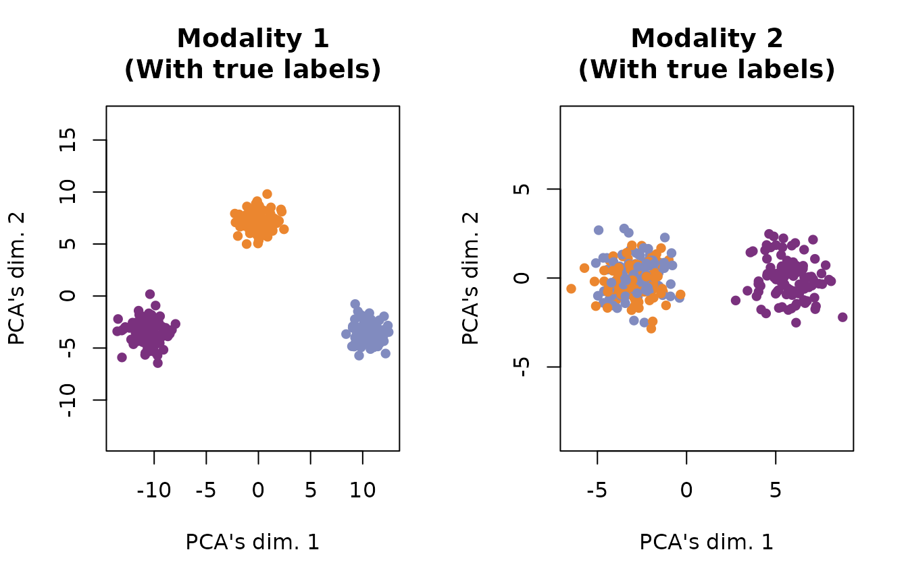
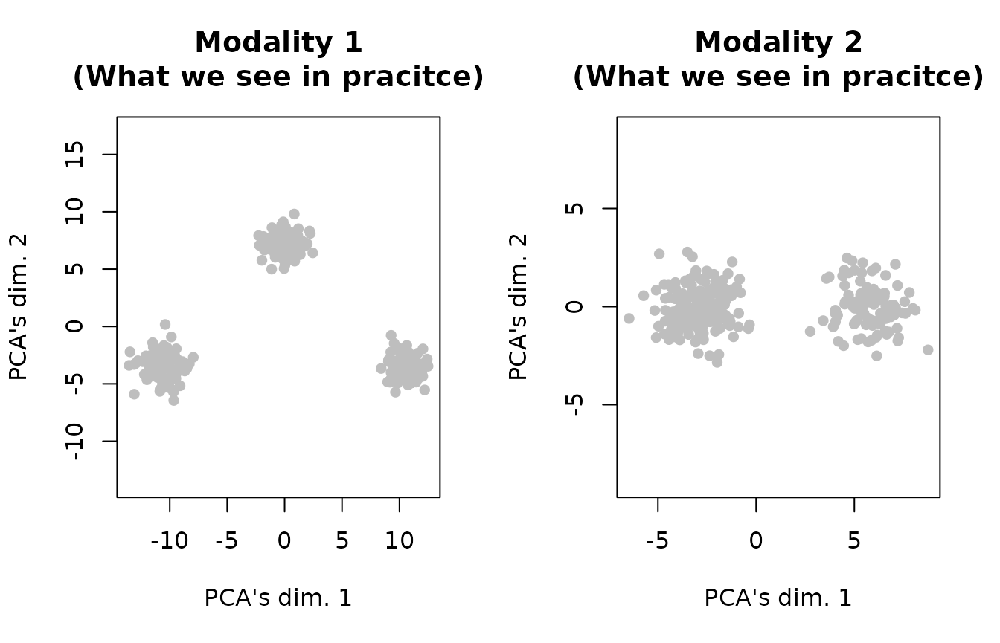

Tilted-CCA Simulation (3 cell types)
tiltedCCA.RmdThe intent of this simulation is to generate simplistic dataset where “Modality 1 has strictly more information than Modality 2.” Since Tilted-CCA infers “information” through the lense of the cell-cell nearest neighbor graph, this means that Modality 1 contains cell separation structure that is not found in Modality 2. Since we design a simulation in this fashion, we expect to see that the common embedding (loosely speaking) is essentially equivalent to Modality 2, and Modality 1’s distinct embedding contains the separation structure that is not found in Modality 2, and Modality 2’s distinct embedding is random noise (since all its information is already represented in the common embedding).
Simulate data
We first generate synthetic data. Here, we generate 300 cells, 100 for each of the 3 true cell types. Each modality will have 10 variables. Looking at the code below, we can see that we purposefully separate all 3 cell types in Modality 1, but we only separate cell types 1 and 3 from cell type 2 in Modality 2.
n_each <- 100
true_cluster <- rep(1:3, each = n_each)
mat_1 <- do.call(rbind, lapply(1:3, function(i){
if(i == 1){
MASS::mvrnorm(n = n_each, mu = c(0,0,0), Sigma = diag(3))
} else if(i == 2) {
MASS::mvrnorm(n = n_each, mu = c(15,0,0), Sigma = diag(3))
} else {
MASS::mvrnorm(n = n_each, mu = c(0,15,0), Sigma = diag(3))
}
}))
mat_2 <- do.call(rbind, lapply(1:3, function(i){
if(i %in% c(1,3)){
MASS::mvrnorm(n = n_each, mu = c(0,0,0), Sigma = diag(3))
} else {
MASS::mvrnorm(n = n_each, mu = c(6,6,0), Sigma = diag(3))
}
}))
mat_1 <- scale(mat_1, center = T, scale = F)
mat_2 <- scale(mat_2, center = T, scale = F)
svd_1 <- svd(mat_1)
svd_2 <- svd(mat_2)
p_1 <- 10; p_2 <- 10
svd_v_1 <- tiltedCCA::generate_random_orthogonal(p_1, 3)
svd_v_2 <- tiltedCCA::generate_random_orthogonal(p_2, 3)
mat_1 <- tcrossprod(svd_1$u %*% diag(svd_1$d), svd_v_1)
mat_2 <- tcrossprod(svd_2$u %*% diag(svd_2$d), svd_v_2)
rownames(mat_1) <- paste0("n", 1:nrow(mat_1))
rownames(mat_2) <- paste0("n", 1:nrow(mat_2))
colnames(mat_1) <- paste0("g", 1:ncol(mat_1))
colnames(mat_2) <- paste0("p", 1:ncol(mat_2))
mat_1[1:5,1:5]
#> g1 g2 g3 g4 g5
#> n1 1.819759 0.5368737 4.036763 -1.2147901 -1.821764
#> n2 1.331994 0.5332072 3.411838 -0.4156336 -2.566754
#> n3 1.579988 0.4680836 3.616605 -1.7683005 -2.005390
#> n4 1.148463 0.4606350 2.978134 -0.5841379 -2.350133
#> n5 1.762367 0.7059740 4.474579 -0.2665754 -3.241323
mat_2[1:5,1:5]
#> p1 p2 p3 p4 p5
#> n1 -0.45066829 -0.2783653 1.0852459 0.4720760 -0.9391990
#> n2 -0.27205972 0.5415940 0.5700232 1.0375929 -0.5041184
#> n3 -0.16369850 0.6491696 0.3264213 1.0037482 -0.3786571
#> n4 -0.46618987 0.1503648 1.0161462 0.8644918 -0.6804707
#> n5 0.05288093 1.0724721 -0.1822755 1.1622260 -0.1242831Plot the data
Since we wish to visualize
svd_func <- function(mat){
svd_res <- svd(mat)
sweep(svd_res$u[,1:2], MARGIN = 2, STATS = svd_res$d[1:2], FUN = "*")
}Below, we set up the colors that we will use for our visualizations.
plot_idx <- sample(1:nrow(mat_1))
orange_col <- rgb(235, 134, 47, maxColorValue = 255)
purple_col <- rgb(122, 49, 126, maxColorValue = 255)
blue_col <- rgb(129, 139, 191, maxColorValue = 255)
col_vec <- c(orange_col, purple_col, blue_col)We now are ready to visualize the data. First, we plot the data as if we had access to the true cell type labels. We see clearly that Modality 1 separates the orange, purple, and blue cells, but Modality 2 only separates the orange and blue cells (i.e., cell types 1 and 3) from the purple cells (i.e., cell type 2).
par(mfrow = c(1,2))
tmp <- svd_func(mat_1)
plot(tmp[plot_idx,1], tmp[plot_idx,2],
main = "Modality 1\n(With true labels)",
xlab = "PCA's dim. 1", ylab = "PCA's dim. 2",
pch = 16, col = col_vec[true_cluster[plot_idx]], asp = T)
tmp <- svd_func(mat_2)
plot(tmp[plot_idx,1], tmp[plot_idx,2],
main = "Modality 2\n(With true labels)",
xlab = "PCA's dim. 1", ylab = "PCA's dim. 2",
pch = 16, col = col_vec[true_cluster[plot_idx]], asp = T)
Of course, we do not have access to these cell type labels in practice, so had this not been simulated data, we would only be able to visualize the data as below.
par(mfrow = c(1,2))
tmp <- svd_func(mat_1)
plot(tmp[plot_idx,1], tmp[plot_idx,2],
main = "Modality 1\n(What we see in pracitce)",
xlab = "PCA's dim. 1", ylab = "PCA's dim. 2",
pch = 16, col = "gray", asp = T)
tmp <- svd_func(mat_2)
plot(tmp[plot_idx,1], tmp[plot_idx,2],
main = "Modality 2\n(What we see in pracitce)",
xlab = "PCA's dim. 1", ylab = "PCA's dim. 2",
pch = 16, col = "gray", asp = T)
Apply Tilted-CCA
In this simulation, we will deploy the “hard clustering” variant of Tilted-CCA. That is, based on our visualization of the data, we can infer large separations of cell types. Hence, we would like to pass this inferred clustering information into Tilted-CCA to aid the estimation of the common and distinct embeddings.
We can estimate this (crudely, which is sufficient for this simulation) via K-means. Notice that we estimating these clusterings (one for each modality) from the data, so we are not “cheating” (loosely speaking). We plot the estimated clusterings below.
clustering_1 <- factor(stats::kmeans(mat_1, centers = 3)$cluster)
clustering_2 <- factor(stats::kmeans(mat_2, centers = 2)$cluster)
par(mfrow = c(1,2))
tmp <- svd_func(mat_1)
plot(tmp[plot_idx,1], tmp[plot_idx,2],
main = "Modality 1\n(Estimated clustering)",
xlab = "PCA's dim. 1", ylab = "PCA's dim. 2",
pch = 16, col = c(1:3)[clustering_1[plot_idx]], asp = T)
tmp <- svd_func(mat_2)
plot(tmp[plot_idx,1], tmp[plot_idx,2],
main = "Modality 2\n(Estimated clustering)",
xlab = "PCA's dim. 1", ylab = "PCA's dim. 2",
pch = 16, col = c(4:5)[clustering_2[plot_idx]], asp = T)Now we are ready to run the standard functions for Tilted-CCA. In general, each usage of Tilted-CCA (even beyond this simulation), will use these following sequence of functions.
Note: It would not be appropriate nor desirable to
use true_cluster (i.e., the “true” cell-type labels) when
using tiltedCCA::form_metacells in general (in simulation
or in practice). This is because large_clustering_1 and
large_clustering_2 are intended to inform Tilted-CCA of the
clustering structure (i.e., how cells are separated geometrically) in
each modality.
set.seed(10)
multiSVD_obj <- tiltedCCA::create_multiSVD(mat_1 = mat_1, mat_2 = mat_2,
dims_1 = 1:3, dims_2 = 1:3,
center_1 = F, center_2 = F,
normalize_row = F,
normalize_singular_value = F,
recenter_1 = F, recenter_2 = F,
rescale_1 = F, rescale_2 = F,
scale_1 = F, scale_2 = F)
multiSVD_obj <- tiltedCCA::form_metacells(input_obj = multiSVD_obj,
large_clustering_1 = clustering_1,
large_clustering_2 = clustering_2,
num_metacells = NULL)
multiSVD_obj <- tiltedCCA::compute_snns(input_obj = multiSVD_obj,
latent_k = 2,
num_neigh = 80,
bool_cosine = F,
bool_intersect = F,
min_deg = 0)
multiSVD_obj <- tiltedCCA::tiltedCCA(input_obj = multiSVD_obj,
fix_tilt_perc = 0)
multiSVD_obj <- tiltedCCA::fine_tuning(input_obj = multiSVD_obj,
verbose = 0)
multiSVD_obj <- tiltedCCA::tiltedCCA_decomposition(multiSVD_obj)We make two notes:
In general, the biggest choices (as a user of Tilted-CCA) is: 1) whether to use the “hard clustering” variant of Tilted-CCA (done here, as seen in arguments of
tiltedCCA::form_metacells) or not, and 2) what thelatent_kandnum_neighare when computing the graph Laplacian bases of the target common shared-nearest-neighbor graph. The former choice is usually inferred when visualizing the data prior to applying Tilted-CCA. The latter choice requires some finesse (as we will show in tutorials of scRNA-seq data).For the sake of simplicity in this tutorial, when we call
tiltedCCA::tiltedCCA, we setfix_tilt_perc = 0. This initializes the “tilt” of each common component (3 in total) to aligned with Modality 2 (which we inferred visually). Then,tiltedCCA::fine_tuningoptimizes the tilt of each common components in a coordinate descent fashion.
Lastly, we can look at the objects stored inside the
multiSVD_obj.
names(multiSVD_obj)
#> [1] "svd_1" "svd_2" "default_assay" "param"
#> [5] "metacell_obj" "snn_list" "laplacian_list" "cca_obj"
#> [9] "tcca_obj" "common_mat_1" "distinct_mat_1" "common_mat_2"
#> [13] "distinct_mat_2"Plot Tilted-CCA’s result
We can visualize the common embedding. We overlay the true cell type
labels onto these plots for interpretability, but notice that
true_cluster was never used in the actual usage of
Tilted-CCA. We can see that, as desired, the common embedding separates
only the orange and blue cells from the purple cells. This is because
these cell type separations are the only ones that are supported by both
modalities. In contrast, only Modality 1 shows separation between orange
and blue cells, so the separation between the orange and blue cells
should not be reflected in the common embedding.
tmp <- svd_func(multiSVD_obj$tcca_obj$common_score)
plot(tmp[plot_idx,1], tmp[plot_idx,2],
main = "Common embedding",
xlab = "Common's dim. 1", ylab = "Common's dim. 2",
pch = 16, col = col_vec[true_cluster[plot_idx]], asp = T)We can also plot the distinct embeddings (one for each Modality 1 and Modality 2). We see that Modality 1’s distinct embedding shows the separation between orange and blue cells (which was absent from the common embedding). In contrast, Modality 2’s distinct embedding clusters all three cell types together because there is no more cell separation structure in Modality 2 that is not already reflected by the common embedding.
par(mfrow = c(1,2))
tmp <- svd_func(multiSVD_obj$tcca_obj$distinct_score_1)
plot(tmp[plot_idx,1], tmp[plot_idx,2],
main = "Modality 1's distinct embed.",
xlab = "Distinct-1's dim. 1", ylab = "Distinct-1's dim. 2",
pch = 16, col = col_vec[true_cluster[plot_idx]], asp = T)
tmp <- svd_func(multiSVD_obj$tcca_obj$distinct_score_2)
plot(tmp[plot_idx,1], tmp[plot_idx,2],
main = "Modality 2's distinct embed.",
xlab = "Distinct-2's dim. 1", ylab = "Distinct-2's dim. 2",
pch = 16, col = col_vec[true_cluster[plot_idx]], asp = T)For comparison, plot Consensus PCA
Finally, for comparison, we can show how Consensus PCA combines information between both modalities. This is in stark contrast with Tilted-CCA, as Consensus PCA combines information between both modalities. Hence, the resulting embedding shows clear separation among all three cell types. This is why we deem Consensus PCA as a method that captures the “union of information,” while Tilted-CCA’s embedding is a method that captures the “intersection of information.”
set.seed(10)
consensus_pca <- tiltedCCA:::consensus_pca(mat_1 = mat_1, mat_2 = mat_2,
dims_1 = 1:2, dims_2 = 1:2,
dims_consensus = 1:2,
apply_pca = T,
center_1 = F, center_2 = F,
center_consensus = F,
recenter_1 = F, recenter_2 = F,
rescale_1 = F, rescale_2 = F,
scale_1 = F, scale_2 = F,
scale_consensus = F,
verbose = 0)
tmp <- svd_func(consensus_pca$dimred_consensus)
plot(tmp[plot_idx,1], tmp[plot_idx,2],
main = "Consensus PCA embedding",
xlab = "Consensus PCA's dim. 1", ylab = "Consensus PCA's dim. 2",
pch = 16, col = col_vec[true_cluster[plot_idx]], asp = T)